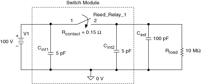
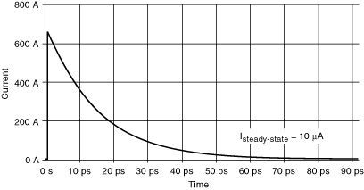

= 时间常数
= 时间常数当电流流过继电器时，触点会消耗功率，如下式所示：
P=I 2 Rcontact(触点)+I 2 Rarc(电弧)
在哪里
P = 继电器触点吸收的功率
I = 通过模块的浪涌电流
R arc = 反弹期间继电器触点之间存在的电弧电阻
R contact（继电器触点）=
继电器触点之间的电阻
Rarc（电弧）以热量的形式消散，从而提高了触点的温度。浪涌电流会瞬间将触点暴露在非常高的功率水平下。与浪涌电流相关的能量可能足以在弹跳和焊接闭合的继电器触点之后熔化触点表面。浪涌电流通常迅速下降到稳态水平。然而，触点弹跳会使继电器在每次激活时遭受多次浪涌，从而造成进一步的损坏。
下图显示了开关模块内连接到电压源和负载的继电器。C int1、C int2和 Rcontact（触点）始终产生与输入电压成比例的浪涌电流。随着负载外部电容的增加，浪涌电流的持续时间会增加（接触加热也会增加）。浪涌电流在负载电容 C int2和 C ext充电时流动。
|  |
其中= 时间常数
在该图中，C int 2 + C external = C and = R contact C > R contact C int 2
当 C int 2两端的电压与 (C int 2 + C external ) 不同时，闭合继电器会导致瞬时浪涌电流等于继电器两端的电压差除以继电器和相关接线的电阻。
=Rcontact触点C）|  |
为防止损坏这些模块，请在负载串联一个电阻器，详见开关电容负载 。
 提交有关此主题的反馈。
提交有关此主题的反馈。 访问ni.com/support以获得技术支持。
访问ni.com/support以获得技术支持。